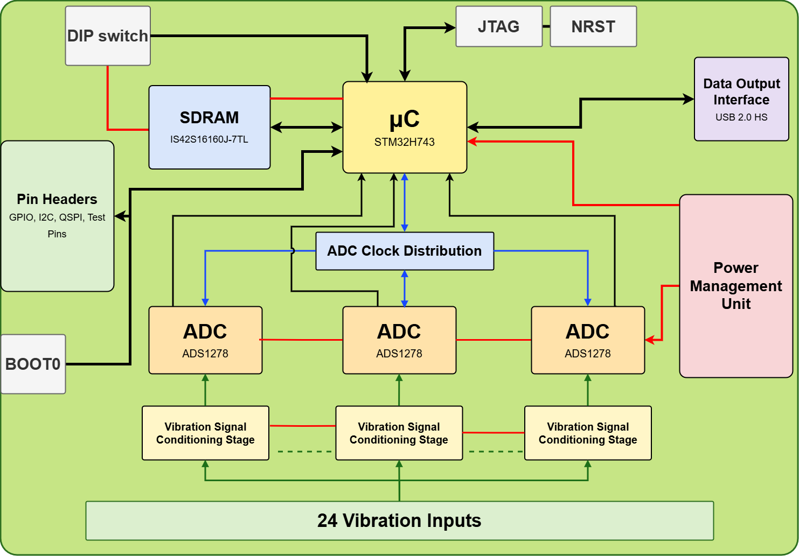
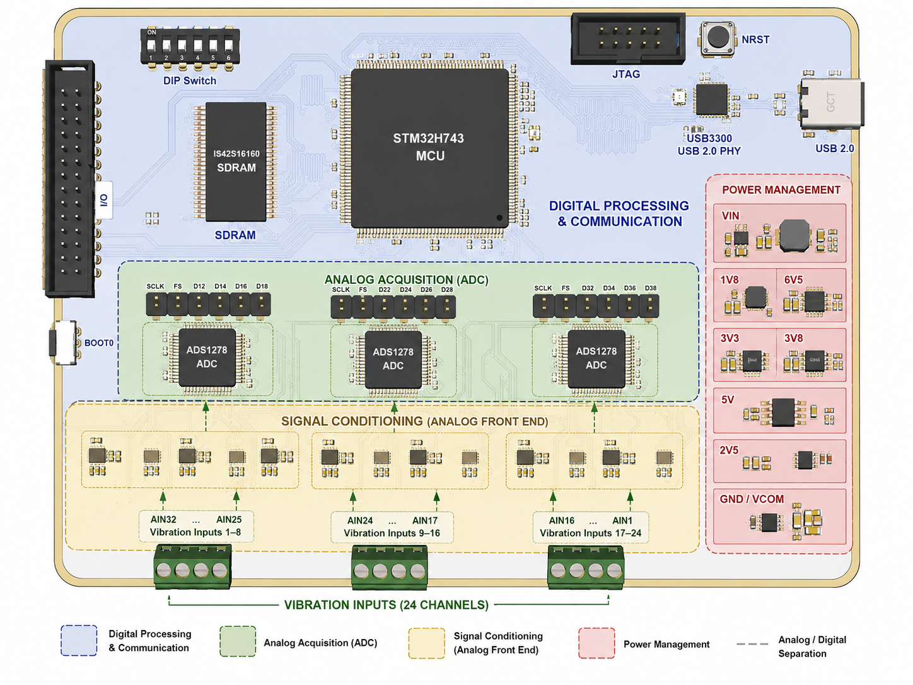
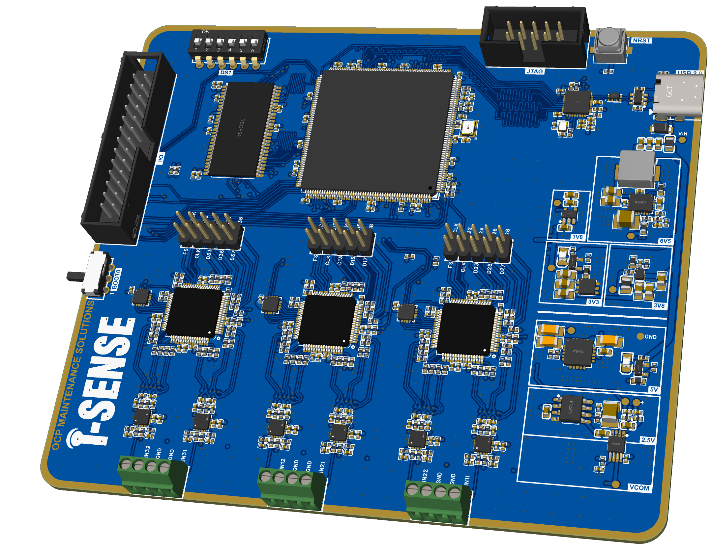

Projet de Fin d'Études — Ingénieur d'État, Génie Électrique et Énergies Renouvelables
Ce PFE a été réalisé au sein d'OCP Maintenance Solutions, filiale du groupe OCP spécialisée dans la maintenance industrielle et la surveillance d'état des équipements (solutions I-Sense, Vibox, MobiVib). Le stage s'est déroulé au département Innovation & Développement des Produits.
La maintenance prédictive repose sur l'analyse de signaux vibratoires captés sur les machines tournantes. Or, les systèmes existants n'acquièrent généralement pas ces signaux de manière synchrone entre plusieurs points de mesure, ce qui limite la précision du diagnostic de défauts (balourd, désalignement, défauts de roulement). L'objectif du projet était donc de concevoir une carte électronique capable d'acquérir 24 voies vibratoires simultanément et de façon synchronisée, avec une haute précision.
Après une étude comparative de plusieurs architectures (ADC, microcontrôleurs, amplificateurs), les composants suivants ont été retenus :
3× ADS1278 (24 bits, 8 voies simultanées chacun) → 24 canaux synchrones à 25,6 kSPS
STM32H743 — gestion des flux SAI/DMA, synchronisation d'horloge, transfert haute vitesse
Amplificateur entièrement différentiel THS4551, dimensionné et simulé (bruit, bande passante)
SDRAM externe pour le buffering, interface USB haute vitesse (PHY ULPI)
Stack-up 6 couches, impédance contrôlée, séparation analogique/numérique, plans de masse dédiés
Architecture multi-rails (LDO + buck converter), référence 2,5 V, marges de régulation validées par simulation
Le projet a abouti à une carte électronique complète, conçue pour acquérir simultanément et de manière synchronisée les signaux vibratoires sur 24 canaux. La conception matérielle a été menée jusqu'au lancement de la fabrication du PCB. Les prochaines étapes identifiées sont la mise en service de la carte, le développement du firmware (configuration des ADC, gestion DMA/SAI), les tests d'acquisition avec capteurs réels, puis l'évolution vers une version industrielle intégrant communication 4G, Ethernet, RS485/Profinet et stockage local — en cohérence avec l'écosystème I-Sense d'OCP-MS.


